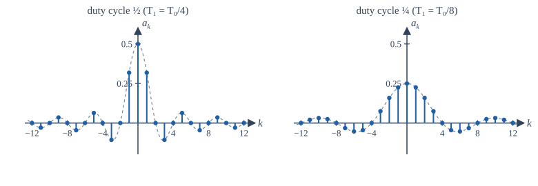
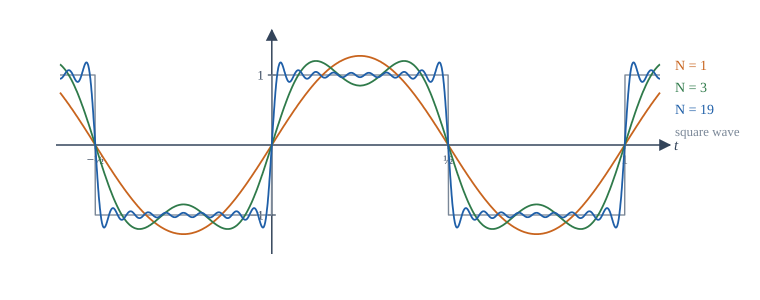

Chapter 5: Fourier Series¶
Periodic signals as sums of harmonics, and what an LTI system does to each harmonic
Learning outcomes
After this chapter you should be able to:
- write the synthesis and analysis equations of the exponential Fourier series and derive the analysis equation from orthogonality;
- convert between the exponential and trigonometric forms, and use the symmetry of real signals;
- compute the Fourier coefficients of square waves, pulse trains and other standard periodic signals;
- state the Dirichlet conditions, explain the Gibbs phenomenon, and apply Parseval's relation;
- find the steady-state output of an LTI system for a periodic input;
- compute the discrete-time Fourier series of a periodic sequence.
5.1 Why build signals from sinusoids?¶
Chapter 4 ended with a striking fact: a complex exponential \(e^{j\omega t}\) passes through any LTI system unchanged in shape, only multiplied by a complex number \(H(j\omega)\). If an input can be written as a sum of complex exponentials, the output is the same sum with each term multiplied by its own \(H\). The hard operation of convolution is replaced by multiplications, one per frequency.
The question is which signals can be written this way. In 1807 Joseph Fourier claimed, in a study of heat flow, that any periodic function could be written as a sum of sinusoids whose frequencies are whole multiples of the fundamental. The claim was disputed for decades, and the precise conditions were worked out later by Dirichlet and others, but in the form used by engineers it is true for every periodic signal we are likely to meet. This chapter develops it.
A signal with period \(T_0\) and fundamental frequency \(\omega_0 = 2\pi/T_0\) can only be built from exponentials that also repeat every \(T_0\). Those are the harmonically related exponentials
The term \(k = 0\) is a constant (the DC component). The terms \(k = \pm1\) have the fundamental frequency and together form the fundamental or first harmonic. The terms \(k = \pm N\) form the \(N\)th harmonic. Musical instruments give a vivid example: a violin and a flute playing the same note have the same fundamental, but different strengths of the higher harmonics, which is why they sound different.
5.2 The exponential Fourier series¶
A periodic signal \(x(t)\) with period \(T_0\) is represented by its Fourier series
with Fourier coefficients
The integral is over any interval of length \(T_0\), for example from \(0\) to \(T_0\) or from \(-T_0/2\) to \(T_0/2\); choose whichever makes the integration easiest. The coefficients \(a_k\) are in general complex. The coefficient \(a_0 = \frac{1}{T_0}\int_{T_0}x(t)\,dt\) is the average value of the signal over one period.
Where the analysis equation comes from¶
The key is that the harmonics are orthogonal over a period:
When \(k = m\) the integrand is 1. When \(k \ne m\) the integrand is a complex exponential that makes exactly \(k - m\) whole turns around the unit circle in one period, so its real and imaginary parts both integrate to zero.
Now multiply the synthesis equation by \(e^{-jm\omega_0 t}\) and integrate over a period. Every term with \(k \ne m\) integrates to zero, and the term \(k = m\) gives \(T_0\,a_m\). Dividing by \(T_0\) gives the analysis equation. The idea is the same as finding the components of a vector by taking dot products with orthogonal unit vectors: the harmonics are the "axes" of the space of periodic signals, and \(a_k\) is the component of \(x\) along the \(k\)th axis.
Key idea
The analysis equation measures how much of each harmonic a periodic signal contains. The synthesis equation adds the harmonics back together. The set \(\{a_k\}\) is the spectrum of the signal: a list of strengths and phases at the frequencies \(k\omega_0\).
A first example: sinusoids by inspection¶
For signals that are already sums of sinusoids, there is no need to integrate: use Euler's formula and read off the coefficients.
Example 5.1 Coefficients by inspection
Find the Fourier coefficients of \(x(t) = 1 + 2\cos(2t) + \sin(4t + \pi/4)\).
The fundamental is \(\omega_0 = 2\) (period \(\pi\)). Expand:
So \(a_0 = 1\), \(a_{\pm1} = 1\), \(a_2 = \frac{1}{2j}e^{j\pi/4} = \frac12 e^{-j\pi/4}\), \(a_{-2} = -\frac{1}{2j}e^{-j\pi/4} = \frac12 e^{j\pi/4}\), and all other \(a_k = 0\). Notice \(a_{-2} = a_2^*\), as the next section explains.
5.3 Real signals and the trigonometric form¶
For a real signal, taking the conjugate of the analysis equation gives
This is conjugate symmetry: \(|a_{-k}| = |a_k|\) (the magnitude spectrum is even) and \(\angle a_{-k} = -\angle a_k\) (the phase spectrum is odd). The pair of terms at \(\pm k\) then combines into one real sinusoid. Writing \(a_k = |a_k|e^{j\theta_k}\),
So every real periodic signal has the compact trigonometric form
Writing \(a_k = \frac12(A_k - jB_k)\) gives the trigonometric form found in many books:
The three forms carry the same information. The exponential form is the most convenient for the algebra of systems; the trigonometric forms are convenient for real signals with symmetry. If \(x\) is real and even, the sine terms vanish (\(B_k = 0\)) and the \(a_k\) are real. If \(x\) is real and odd, the cosine terms and \(a_0\) vanish (\(A_k = 0\)) and the \(a_k\) are purely imaginary. The rules of Section 1.5 about integrals of even and odd functions are what make this work.
5.4 Standard examples¶
The square wave¶
Example 5.2 A symmetric square wave
Let \(x(t) = 1\) for \(0 < t < T_0/2\) and \(x(t) = -1\) for \(-T_0/2 < t < 0\), repeated with period \(T_0\). Find its Fourier series.
The signal is real and odd, so \(a_0 = 0\) and the coefficients are imaginary. For \(k \ne 0\):
Since \(e^{\pm jk\pi} = (-1)^k\) and \(\omega_0T_0 = 2\pi\),
In trigonometric form, \(B_k = 2j\,a_k = \frac{4}{\pi k}\) for odd \(k\), so
Only odd harmonics appear, and their amplitudes fall off as \(1/k\).
The absence of even harmonics is no accident. This square wave has half-wave symmetry: \(x(t + T_0/2) = -x(t)\), the second half of each period is the negative of the first. Every signal with half-wave symmetry has only odd harmonics.
The rectangular pulse train¶
Example 5.3 A pulse train and the sinc envelope
Let \(x(t) = 1\) for \(|t| < T_1\) and \(0\) for \(T_1 < |t| < T_0/2\), repeated with period \(T_0\). Find its Fourier coefficients.
The signal is real and even, so the coefficients are real. In terms of the normalised sinc, \(a_k = \dfrac{2T_1}{T_0}\,\mathrm{sinc}\!\left(\dfrac{2kT_1}{T_0}\right)\). For a 50% duty cycle (\(T_1 = T_0/4\)) this gives \(a_0 = \frac12\), \(a_k = \frac{\sin(k\pi/2)}{\pi k}\): \(a_1 = 1/\pi\), \(a_2 = 0\), \(a_3 = -1/(3\pi)\), and so on.

Figure 5.1 shows a pattern that will recur in Chapter 6. The coefficients are samples of a fixed envelope, \(\frac{2T_1}{T_0}\mathrm{sinc}(2T_1 f)\) evaluated at \(f = k/T_0\). Making the pulses narrower (smaller \(T_1\)) makes the envelope wider: short events need many frequencies. Making the period longer (larger \(T_0\)) packs the samples closer together. In the limit \(T_0 \to \infty\) only a single pulse remains, the samples merge into a continuous curve, and the Fourier series becomes the Fourier transform.
5.5 Convergence and the Gibbs phenomenon¶
Does the infinite sum really add up to \(x(t)\)? Two facts settle it for engineering purposes.
Energy convergence. If \(x\) has finite energy over one period, \(\int_{T_0}|x(t)|^2dt < \infty\), then the partial sums \(x_N(t) = \sum_{k=-N}^{N}a_k e^{jk\omega_0 t}\) converge to \(x\) in the sense that the energy of the error over a period tends to zero as \(N \to \infty\). Moreover \(x_N\) is the best approximation to \(x\), in this energy sense, that can be made from the harmonics up to \(N\).
Pointwise convergence (Dirichlet conditions). If over one period \(x\) is absolutely integrable, has a finite number of maxima and minima, and has a finite number of finite discontinuities, then the series converges to \(x(t)\) at every point where \(x\) is continuous, and to the midpoint of the jump, \(\frac12[x(t^-) + x(t^+)]\), at every discontinuity. Every periodic signal you can generate in a laboratory satisfies these conditions.
Near a discontinuity something curious happens. Figure 5.2 shows partial sums of the square wave. As \(N\) grows, the ripples crowd closer to the jump, but the first overshoot does not get smaller: it stays at about 9% of the size of the jump. For the square wave, which jumps by 2, the partial sums peak at about 1.179 instead of 1, however many terms are taken. This is the Gibbs phenomenon. It does not contradict convergence: at any fixed point away from the jump the ripple eventually dies out, and the region of overshoot becomes ever narrower, so the error energy tends to zero. But the maximum error does not tend to zero.

Gibbs in practice
The same overshoot appears whenever a signal with sharp edges is passed through a filter that cuts off abruptly in frequency: ringing next to sharp edges in compressed images and audio, for instance. Chapter 12 shows how windows trade a slightly gentler cut-off for much smaller ripple.
5.6 Properties of the Fourier series¶
Let \(x(t) \leftrightarrow a_k\) and \(y(t) \leftrightarrow b_k\), both with period \(T_0\). The properties in Table 5.1 follow from the analysis equation with simple substitutions. They save a great deal of integration.
| Property | Signal | Coefficients |
|---|---|---|
| Linearity | \(Ax(t) + By(t)\) | \(Aa_k + Bb_k\) |
| Time shift | \(x(t - t_0)\) | \(a_k\,e^{-jk\omega_0 t_0}\) |
| Frequency shift | \(e^{jM\omega_0 t}x(t)\) | \(a_{k - M}\) |
| Time reversal | \(x(-t)\) | \(a_{-k}\) |
| Time scaling | \(x(\alpha t)\), period \(T_0/\alpha\) | \(a_k\) (at the new fundamental \(\alpha\omega_0\)) |
| Conjugation | \(x^*(t)\) | \(a_{-k}^*\) |
| Differentiation | \(\dfrac{dx}{dt}\) | \(jk\omega_0\,a_k\) |
| Periodic convolution | \(\int_{T_0}x(\tau)y(t - \tau)\,d\tau\) | \(T_0\,a_k b_k\) |
| Multiplication | \(x(t)\,y(t)\) | \(\sum_{m} a_m b_{k-m}\) |
| Real signal | \(x\) real | \(a_{-k} = a_k^*\) |
| Parseval | \(\dfrac{1}{T_0}\displaystyle\int_{T_0}\lvert x(t)\rvert^2dt\) | \(\displaystyle\sum_k \lvert a_k\rvert^2\) |
Table 5.1. Properties of the continuous-time Fourier series.
The time-shift property says that delaying a signal leaves the magnitudes \(|a_k|\) unchanged and adds a phase \(-k\omega_0t_0\) that grows linearly with frequency. The differentiation property says that differentiating multiplies each harmonic by \(jk\omega_0\), which emphasises high harmonics; integration (of a signal with \(a_0 = 0\)) divides by \(jk\omega_0\) and smooths. So the coefficients of a signal with jumps fall as \(1/k\), those of a continuous signal with kinks (like a triangle wave) fall as \(1/k^2\), and smoother signals fall faster still.
Parseval's relation says that the average power of a periodic signal is the sum of the powers of its harmonics. Each pair \(\pm k\) contributes \(2|a_k|^2\), which is the power \(\frac12(2|a_k|)^2\) of the sinusoid \(2|a_k|\cos(k\omega_0 t + \theta_k)\), as Example 1.6 requires.
Example 5.4 Using Parseval
For the square wave of Example 5.2, the power is 1 (since \(|x| = 1\) always). Parseval gives
so \(\sum_{k \text{ odd}}\frac{1}{k^2} = \frac{\pi^2}{8}\). A signals result gives a classical sum for free. The fundamental alone carries \(2\cdot\frac{4}{\pi^2} = 0.811\) of the power, or 81%.
Example 5.5 A triangle wave from a square wave
Let \(v(t) = 1 - 4|t|/T_0\) for \(|t| \le T_0/2\), repeated with period \(T_0\): an even triangle wave that peaks at 1 at \(t = 0\) and falls to \(-1\) at \(t = \pm T_0/2\). Find its coefficients without integrating \(v\) directly.
Its average is 0, so \(d_0 = 0\). Its derivative is \(-4/T_0\) for \(0 < t < T_0/2\) and \(+4/T_0\) for \(-T_0/2 < t < 0\), which is \(-\frac{4}{T_0}\) times the square wave of Example 5.2. So \(dv/dt\) has coefficients \(c_k = -\frac{4}{T_0}\cdot\frac{2}{j\pi k}\) for odd \(k\) and 0 for even \(k\). By the differentiation property, \(c_k = jk\omega_0 d_k\), hence for odd \(k\)
The coefficients are real (the signal is even), present only for odd \(k\) (half-wave symmetry), and fall as \(1/k^2\), faster than the square wave's \(1/k\). Check at \(t = 0\): \(v(0) = \sum_k d_k = 2\cdot\frac{4}{\pi^2}\sum_{k\text{ odd}}\frac{1}{k^2} = \frac{8}{\pi^2}\cdot\frac{\pi^2}{8} = 1\), using Example 5.4.
5.7 LTI systems with periodic inputs¶
Here is the payoff. Let a periodic signal \(x(t) = \sum_k a_k e^{jk\omega_0 t}\) drive a stable LTI system with frequency response
Each harmonic is an eigenfunction, so it emerges multiplied by \(H(jk\omega_0)\):
The output is periodic with the same period, and its coefficients are \(b_k = a_k H(jk\omega_0)\). The system reshapes the spectrum: harmonics where \(|H|\) is large are emphasised, those where \(|H|\) is small are suppressed. This is filtering. (Strictly, this is the steady-state response, after any transient caused by switching the input on has died away; for a periodic input defined for all time there is no transient.)
Example 5.6 A square wave through an RC low-pass filter
An RC circuit with \(RC = 1/(2\pi\cdot 100)\) s has \(H(j\omega) = \dfrac{1}{1 + j\omega RC}\) and a cut-off frequency of 100 Hz. The input is the ±1 square wave of Example 5.2 with fundamental 100 Hz, so \(\omega_0RC = 1\). Find the amplitudes of the first three non-zero harmonics at the output.
At harmonic \(k\), \(H(jk\omega_0) = \dfrac{1}{1 + jk}\), with magnitude \(1/\sqrt{1 + k^2}\). The input sinusoid at harmonic \(k\) (odd) has amplitude \(2|a_k| = \frac{4}{\pi k}\).
| \(k\) | Input amplitude \(\frac{4}{\pi k}\) | \(\lvert H\rvert = \frac{1}{\sqrt{1+k^2}}\) | Output amplitude |
|---|---|---|---|
| 1 | 1.273 | 0.707 | 0.900 |
| 3 | 0.424 | 0.316 | 0.134 |
| 5 | 0.255 | 0.196 | 0.050 |
Table 5.2. Harmonic amplitudes before and after the filter.
The third harmonic falls from 33% to 15% of the fundamental, and the fifth from 20% to 6%. The output looks much more like a sinusoid: the corners of the square wave are rounded off, as anyone who has looked at a square wave through a slow amplifier on an oscilloscope has seen.
5.8 The discrete-time Fourier series¶
A periodic sequence \(x[n]\) with fundamental period \(N\) can also be written as a sum of harmonically related exponentials \(e^{jk(2\pi/N)n}\). There is one big difference from continuous time: because \(e^{j(k + N)(2\pi/N)n} = e^{jk(2\pi/N)n}\), there are only \(N\) distinct harmonics. The series is a finite sum:
where \(\langle N\rangle\) means any \(N\) consecutive integers, such as \(0, 1, \ldots, N-1\). The coefficients are themselves periodic: \(a_{k+N} = a_k\). There are no convergence questions, because nothing is infinite; the \(N\) equations of the synthesis formula are simply solved exactly by the analysis formula. The orthogonality that makes it work is \(\sum_{n=0}^{N-1}e^{j(k-m)(2\pi/N)n} = N\) if \(k - m\) is a multiple of \(N\) and \(0\) otherwise, which is the finite geometric series with ratio \(e^{j(k-m)2\pi/N}\).
Example 5.7 DTFS of a short periodic sequence
Let \(x[n]\) have period 4 with \(x[0] = 1\), \(x[1] = 1\), \(x[2] = 0\), \(x[3] = 0\). With \(e^{-j2\pi/4} = -j\):
So \(a_0 = \frac12\), \(a_1 = \frac{1 - j}{4}\), \(a_2 = 0\), \(a_3 = \frac{1 + j}{4}\). Since \(x\) is real, \(a_3 = a_{-1} = a_1^*\), as conjugate symmetry requires. Check by synthesis at \(n = 0\): \(\frac12 + \frac{1 - j}{4} + 0 + \frac{1 + j}{4} = 1\). Correct.
Up to the factor \(\frac1N\), the DTFS coefficients over one period are exactly what is computed by the discrete Fourier transform of Chapter 8, the most widely used algorithm in signal processing.
5.9 Fourier coefficients numerically¶
Computing \(a_k\) by numerical integration is a good check on algebra. The program below approximates the analysis integral for the pulse train of Example 5.3 with \(T_0 = 1\) and \(T_1 = 0.25\), checks Parseval's relation, and measures the Gibbs overshoot of the square wave.
import numpy as np
T0, T1 = 1.0, 0.25 # period and half-width of the pulse
w0 = 2 * np.pi / T0
M = 100_000 # samples per period for the numerical integral
t = (np.arange(M) + 0.5) / M * T0 - T0 / 2 # midpoints over one period
x = (np.abs(t) < T1).astype(float)
def coeff(k):
"""a_k = (1/T0) * integral over one period of x(t) e^{-j k w0 t} dt (midpoint rule)."""
return np.mean(x * np.exp(-1j * k * w0 * t))
for k in range(0, 6):
exact = 2 * T1 / T0 if k == 0 else np.sin(k * w0 * T1) / (np.pi * k)
print(f"a_{k}: numerical {coeff(k).real:+.5f} formula {exact:+.5f}")
# Parseval: power from time samples versus sum of |a_k|^2
K = np.arange(-2000, 2001)
ak = np.where(K == 0, 2 * T1 / T0, np.sin(K * w0 * T1) / (np.pi * np.where(K == 0, 1, K)))
print("power in time :", np.mean(x ** 2))
print("sum |a_k|^2 (|k|<=2000):", round(float(np.sum(ak ** 2)), 5))
# Gibbs: peak of the partial sum of the +/-1 square wave, (4/pi) sum sin(k w0 t)/k, k odd
tt = np.linspace(0, 0.1, 20001)
for N in (9, 49, 199):
s = sum(4 / np.pi * np.sin(k * w0 * tt) / k for k in range(1, N + 1, 2))
print(f"N = {N:3d}: peak of partial sum = {s.max():.4f}")
a_0: numerical +0.50000 formula +0.50000
a_1: numerical +0.31831 formula +0.31831
a_2: numerical +0.00000 formula +0.00000
a_3: numerical -0.10610 formula -0.10610
a_4: numerical -0.00000 formula -0.00000
a_5: numerical +0.06366 formula +0.06366
power in time : 0.5
sum |a_k|^2 (|k|<=2000): 0.49995
N = 9: peak of partial sum = 1.1823
N = 49: peak of partial sum = 1.1791
N = 199: peak of partial sum = 1.1790
The coefficients match the formula to five decimal places, and Parseval's sum approaches the power 0.5 as more harmonics are included (the coefficients fall only as \(1/k\), so convergence is slow). The Gibbs peak settles near 1.179 and does not fall as \(N\) grows.
5.10 Summary¶
Summary
- A periodic signal is a sum of harmonics: \(x(t) = \sum_k a_k e^{jk\omega_0 t}\) with \(a_k = \frac{1}{T_0}\int_{T_0}x(t)e^{-jk\omega_0 t}dt\). Orthogonality of the harmonics gives the analysis equation.
- For real signals \(a_{-k} = a_k^*\), and the series can be written with cosines and sines. Even signals give real \(a_k\); odd signals give imaginary \(a_k\); half-wave symmetry gives only odd harmonics.
- The square wave has \(a_k = 2/(j\pi k)\) for odd \(k\); the pulse train has a sinc-shaped spectrum whose width is inversely proportional to the pulse width.
- Under the Dirichlet conditions the series converges to \(x\) where \(x\) is continuous and to the midpoint at jumps. Near a jump the partial sums overshoot by about 9% of the jump (Gibbs).
- Delay adds linear phase; differentiation multiplies by \(jk\omega_0\); Parseval equates power with \(\sum|a_k|^2\).
- An LTI system multiplies the \(k\)th harmonic by \(H(jk\omega_0)\).
- A periodic sequence of period \(N\) has exactly \(N\) distinct DTFS coefficients, found by a finite sum.
5.11 Exercises¶
Exercise 5.1
Find the Fourier coefficients of \(x(t) = 3\cos(5t) - 4\sin(10t)\).
Answer
\(\omega_0 = 5\). \(a_{\pm1} = \frac32\); \(-4\sin 10t = -\frac{4}{2j}(e^{j10t} - e^{-j10t})\) gives \(a_2 = -\frac{2}{j} = 2j\) and \(a_{-2} = -2j\). All others are zero.
Exercise 5.2
What is \(a_0\) for the pulse train of Example 5.3 with \(T_0 = 5\) ms and \(T_1 = 0.5\) ms?
Answer
0.2. \(a_0 = 2T_1/T_0 = 1/5\): the fraction of each period during which the signal is on.
Exercise 5.3
The square wave of Example 5.2 is delayed by \(T_0/4\). Find the new coefficients and show that they are real.
Answer
By the time-shift property, \(b_k = a_k e^{-jk\omega_0 T_0/4} = \frac{2}{j\pi k}e^{-jk\pi/2}\) for odd \(k\) (and 0 for even \(k\)). For \(k = 1\), \(e^{-j\pi/2} = -j\) gives \(b_1 = -\frac{2}{\pi}\); for \(k = 3\), \(e^{-j3\pi/2} = j\) gives \(b_3 = \frac{2}{3\pi}\). In general \(b_k = (-1)^{(k+1)/2}\frac{2}{\pi k}\), which is real. This is expected: the delayed wave is \(-1\) on \((-T_0/4, T_0/4)\) and \(+1\) on the rest of the period, an even signal.
Exercise 5.4
A periodic signal has \(a_0 = 2\), \(a_{\pm1} = 1\), \(a_{\pm3} = j\) and \(a_{\mp3}\) such that the signal is real. Is \(a_3 = j\) and \(a_{-3} = j\) consistent with a real signal?
Answer
No. A real signal needs \(a_{-3} = a_3^* = -j\). With \(a_3 = j\) and \(a_{-3} = -j\), the pair gives \(2\,\mathrm{Re}\{je^{j3\omega_0t}\} = -2\sin 3\omega_0t\).
Exercise 5.5
Use Parseval to find the power of \(x(t) = 1 + \cos(t) + \frac12\sin(2t)\).
Answer
\(|a_0|^2 = 1\); \(a_{\pm1} = \frac12\) contribute \(2\cdot\frac14 = \frac12\); \(a_{\pm2}\) have magnitude \(\frac14\) and contribute \(2\cdot\frac{1}{16} = \frac18\). Power \(= 1.625\).
Exercise 5.6
Without integrating, say which harmonics are present in a periodic signal that is real, even and has half-wave symmetry.
Answer
Only odd harmonics (half-wave symmetry), and only cosines with real coefficients (even). For example the even square wave and the triangle wave.
Exercise 5.7
A system has \(H(j\omega) = \dfrac{1}{1 + j\omega}\). Find the steady-state output for \(x(t) = 2 + \cos t\).
Answer
DC: \(H(0) = 1\), so 2 passes unchanged. At \(\omega = 1\): \(H = \frac{1}{\sqrt2}e^{-j\pi/4}\). Output \(y(t) = 2 + \frac{1}{\sqrt2}\cos(t - \pi/4)\).
Exercise 5.8
Find the DTFS coefficients of \(x[n] = \cos(\pi n/3)\).
Answer
\(N = 6\). \(\cos(\pi n/3) = \frac12 e^{j(2\pi/6)n} + \frac12 e^{-j(2\pi/6)n}\), so \(a_1 = a_{-1} = a_5 = \frac12\) and the other coefficients in a period are zero.
Exercise 5.9
Compute the DTFS of the period-3 sequence \(x[0] = 3\), \(x[1] = 0\), \(x[2] = 0\).
Answer
\(a_k = \frac13\cdot 3 = 1\) for every \(k\). A single impulse per period contains all harmonics equally.
Exercise 5.10
Explain why the Fourier coefficients of a triangle wave fall off faster than those of a square wave.
Answer
The triangle is the integral of a square wave (minus its mean). Integration divides the \(k\)th coefficient by \(jk\omega_0\), turning \(1/k\) decay into \(1/k^2\). In general, the smoother the signal, the faster its coefficients decay.
5.12 Quiz¶
Check your understanding of Chapter 5
Exercise 1
For a real periodic signal, a₋ₖ equals
- aₖ
- −aₖ
- the conjugate of aₖ
- zero
Answer
the conjugate of aₖ
Exercise 2
A real, odd periodic signal has Fourier coefficients that are
- real
- purely imaginary
- all zero for odd k
- equal to 1
Answer
purely imaginary
Exercise 3
What is the average value a₀ of a pulse train that is 1 for 20% of each period and 0 otherwise?
Answer
0.2 / 1/5
Exercise 4
As more terms are added, the Gibbs overshoot next to a jump
- shrinks to zero
- stays near 9% of the jump
- grows without limit
- moves away from the jump
Answer
stays near 9% of the jump
Exercise 5
Delaying a periodic signal by t₀ multiplies aₖ by
- e^(−jkω₀t₀)
- e^(jkω₀t₀)
- t₀
- jkω₀
Answer
e^(−jkω₀t₀)
Exercise 6
How many distinct DTFS coefficients does a sequence with fundamental period 8 have?
Answer
8 / eight
Exercise 7
The relation equating the average power to the sum of |aₖ|² is called ___ relation.
Answer
Parseval's / Parseval